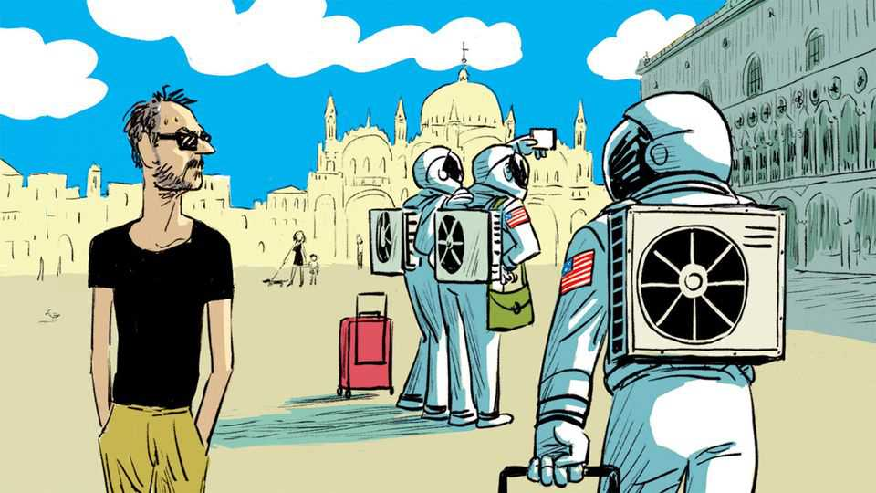

Europeans should learn to love the air-conditioner
Green electricity means never having to say sorry for lowering the thermostat
June 18th 2026

AMERICANS AND Europeans differ loudly on many issues, from health-care policy to gun-carrying etiquette. But a quieter division appears every summer when they visit each other’s continents. Europeans touring America complain that shops and restaurants are so frigidly air-conditioned as to require a jacket; step outside again and your glasses fog over. Yanks holidaying in Europe expect cool comfort, and grow surly on finding that many old-world buildings require them to sweat and bear it.
The divide is rooted in both climate and culture. Long before General Electric began cooling using circulating chemicals, southern Europe was built to handle heat. In traditional houses, white paint and shaded courtyards keep things cool. Windows are thrown open and rooms aired in the mornings. Shutters keep out the midday sun, and siestas allow one to skip the hours when it is too hot to do much anyway. Europe’s southerners think coddled Americans don’t know how to cope with heat naturally. Northern Europe, meanwhile, is mostly spared the problem: June days can be cold enough for a Scandinavian knitted sweater. Flinty northern Protestants regard buying an air-conditioner for the year’s few scorchers as an expensive environmental sin.
These days, climate change is putting such attitudes to the test. Europe is expecting a broiling summer, in part thanks to the El Niño weather event. As it is, heat contributes to around 175,000 deaths a year on the continent, the UN reckons. Yet Europeans who think first-world lifestyles are largely to blame for global warming may feel pangs of carbon guilt about equipping their houses with air-conditioning, or using it if they have it. They needn’t. The impressive build-out of renewable energy in Europe’s hottest places means that judiciously dialling down the temperature will not do much to melt the glaciers.
Take Spain, where solar capacity has grown nearly tenfold in the past decade. Readers sweating it out in Seville can head to apps.electricitymaps.com to reassure themselves: on June 10th a kilowatt-hour of Spanish electricity produced just 86 grams of CO2 equivalent. In the American state of Georgia the figure was 442. On a sunny summer day at noon, only about 10% of Spain’s electricity comes from fossil fuels; around half comes from solar. Portugal does just as well, and France better still, thanks to its dozens of nuclear reactors. Italy is a laggard, getting 30-40%of its electricity from gas. But its 224g of CO2 per kilowatt-hour is positively verdant next to much of America.
Not all of Europe can congratulate itself. Poland remains heavily reliant on coal, making its electricity mix about as bad as America’s. Germany’s rash decision in 2010 to eliminate nuclear power left it dependent on coal and gas, producing three times as much CO2 per watt-hour as Spain. Britain, depending on the weather, falls between Italy and Iberia. There are also unexpected bright spots like Albania, which sometimes gets 100% of its electricity from hydroelectric dams. Latvia is the greenest of the Baltics, thanks to more solar power than you might expect.
Climate morality aside, many on the old continent fret about how to pay for cranking up the aircon dial. Americans are roughly a third richer than Europeans, and to add insult to injury their household electricity costs about half as much. Even middle-class Europeans worry about a sudden bump in energy prices owing to an unexpected geopolitical crisis—say, a war in Iran.
Yet European homes are smaller than American ones, and use about a third as much electricity on average. Moreover, the solar boom means that power is not just greener but cheaper on hot, sunny afternoons. Setting the dishwasher to run overnight (prices are generally highest around 9pm) can free up room in one’s budget to cool off the home before going to bed. Smart meters make this sort of demand-shifting easier. And astute governments offer funding to make old houses energy-efficient, which can pay for itself (provided they do not make the mistake of Italy’s “Superbonus” programme: failing to check that the renovations take place).
The war in Iran has driven up fossil-fuel prices, but in parts of Europe (notably France and Spain) electricity bills have risen much less. That reflects smart policies. After the war in Ukraine many Europeans not only throttled their use of Russian gas, but reduced reliance on it in general. The countries that decarbonised fastest have reaped the greatest benefits. Voters might consider taking the revolutionary step of rewarding politicians who made good decisions. They are probably best equipped to bring Europe the vast expansion of power capacity it needs for the future.
To be sure, Europe faces an energy crunch. It must electrify industries to compete with China and expand its data centres, dwarfed by America’s, lest the artificial-intelligence revolution render it a vassal. That means better-connected electricity markets; France should let its reactors compete with Spanish solar farms. It means accelerating the build-up of battery storage, upgrading grids, and adding vastly more renewable energy. In this equation a bit more domestic air-conditioning is little more than a rounding error.
For green politicians buffeted in recent years by falling support, a call to chill out in front of the AC may sound like surrender. That, however, is a script that ought to be flipped. It is precisely because climate-conscious governments have prodded Europe to quit fossil fuels that the continent’s electricity is becoming less harmful to the planet—and less expensive. As the world warms, Europe is heating up faster than any other region. Europeans poor and rich will be using more air conditioning, both to make lives more pleasant and in extreme cases to save them. Those who prefer to tough out the summer are free to do so. But the goal should be to make cheap, clean air-conditioning available to everyone. ■
Subscribers to The Economist can sign up to our Opinion newsletter, which brings together the best of our leaders, columns, guest essays and reader correspondence.